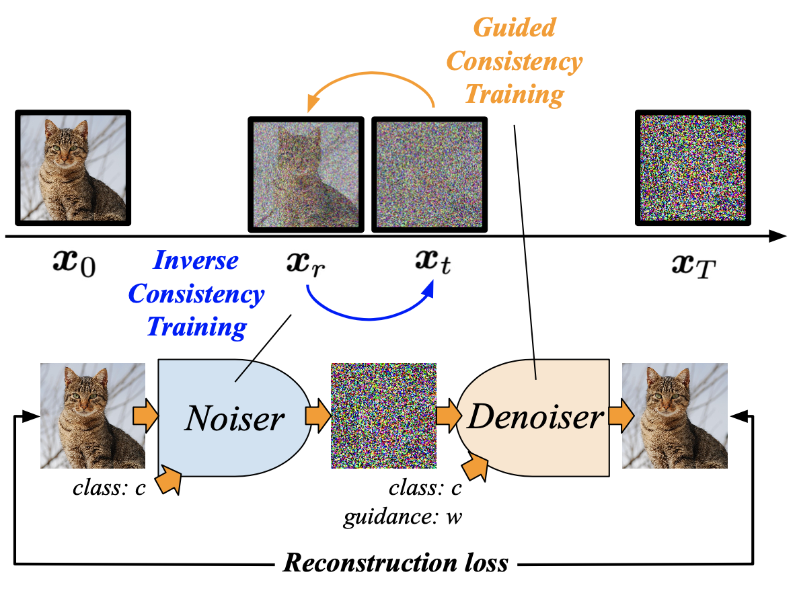

Beyond and Free from Diffusion:
Invertible Guided Consistency Training (iGCT)
- Chia-Hong Hsu Brown University
- Shiu-Hong Kao HKUST
- Randall Balestriero Brown University
Abstract
Guidance in image generation steers models towards higher-quality or more targeted outputs, typically achieved in Diffusion Models (DMs) via Classifier-free Guidance (CFG). However, recent Consistency Models (CMs), which offer fewer function evaluations, rely on distilling CFG knowledge from pretrained DMs to achieve guidance, making them costly and inflexible. In this work, we propose invertible Guided Consistency Training (iGCT), a novel training framework for guided CMs that is entirely data-driven. iGCT, as a pioneering work, contributes to fast and guided image generation and editing without requiring the training and distillation of DMs, greatly reducing the overall compute requirements. iGCT addresses the saturation artifacts seen in CFG under high guidance scales. Our extensive experiments on CIFAR-10 and ImageNet64 show that iGCT significantly improves FID and precision compared to CFG. At a guidance of 13, iGCT improves precision to 0.8, while DM's drops to 0.47. Our work takes the first step toward enabling guidance and inversion for CMs without relying on DMs.
Video: Real-time image editing with iGCT, 1-step inversion (via noiser) and editing (via denoiser).
Overview of iGCT
iGCT is a DM-independent, data-driven approach that incorporates guidance into CMs. As oppose to training a denoiser that maps noise to image, iGCT's noiser learns to map image to noise by swapping the model's input at training, i.e., the noisier sample becomes the target. The predicted noise latent and denoised image distribution is aligned using the reconstruction loss. Refer to the paper for details.
Results
iGCT's ability to trade off diversity for precision as guidance strength increases, in contrast to CFG that experiences declines in both quality and diversity beyond a certain threshold. Video: As guidance strength increases, iGCT trades off diversity for precision without oversaturating the image. Top: EDM 18-steps guided generation. Bottom: iGCT 1-step guided generation.